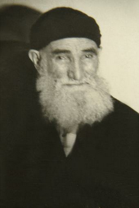

Dede Paþa Hazretleri [1879-1979]

Asýl adý Musa Baþtürk olan bu büyük mürþid manevî alemde Dede Paþa Hazretleri lâkabý ile tanýnmaktadýr. 1879 yýlýnda Bayburt'un Pulur nahiyesine baðlý Aþaðý Lori köyünde dünyaya geldi. Babasý Hüseyin Efendi ve annesi Gül Haným'dýr. Soyadý kanunu gereði aile Baþtürk soyadýný almýþtýr.Hazret okumayý çok severdi, ilk önce sübyan mektebine gitti, bu okulda çok baþarýlý idi. Okul dýþýnda da Bayburt'a baðlý Yukarý Aksüt köyünde Kitapsýz Hacý Mustafa Efendi diye bir zattan dersler almýþtýr. Bu zat Hazret'in zekasýna hayret edermiþ. Sürekli "bu çocuk bir baþka" diye saðda solda söylermiþ, zaten kendilerine "Dede Paþa" adýný da bu zat koymuþtur. Sübyan mektebini bitirdikten sonra Bayburt'ta Rüþtiye'ye baþlamdý. Burayý da baþarýyla okudu. Daha sonra babasý Ýstanbuldaki Darul Ülya adlý okula kaydýný yaptýrdý. Ama babasý vefat bedince Dede Paþa Hazretleri okulu býraktý ve köyüne döndü. Dede Paþa hazretleri köydeki arazi iþiyle meþgul oldu. Ancak gönlündeki ateþ baþka idi. O sürekli okumak istiyor. Ýþlerden fýrsat buldukça Bayburt´ta bulunan hocalardan fýkýh dersleri alýyordu.
Günlerden bir gün köye gönlündeki ateþi söndürecek belki de daha da alevlendirecek Pir-i Sami hazretlerinin halifesi, Þeyh Muhammed Beþir Erzincani (K.s) gelir. Dede Paþa hazretleri Beþir Efendinin sohbetlerini dinler, etkilenir. El tutup, mürid olur. Beþir Efendi köyden ayrýlýp, memleketi Erzincan´a dönünce Dede Paþa´yý bir sevgi hasreti sarar. Köydeki arazileri dayýlarýna býrakýp Beþir Efendi´nin Erzincan´daki dergahýna hizmete koþar. Dede Paþa Hazretleri böylece Erzincanlý Nakþbendi Meþayihinden Muhammed Beþir Efendi'den tarikat dersi alýr. Kendi köyünden Hazret'in Tercan'daki tekkesine sürekli gidip arasýra kendi köyü Aþaðý Lori'ye dönermiþ. Erzincan'da bulunan Beþir Efendinin dergahýnda sürekli sohbete katýlýr, dergahýn her türlü hizmetinde bulunur.
1932 yýlýnda Þeyh Beþir Efendi yerine Dede Paþa hazretlerini halife olarak býrakarak ötelere sefer eder. Vasiyeti üzerine Terzi Baba Kabristaný´nda topraða verilir. Paþa hazretleri, Bayburt´un Aþaðý Lori Köyü´ne dönerek burada irþad görevine baþlar.
Dede Paþa Hazretleri´nin ilk hanýmý Þefika Hatun 1957 yýlýnda vefat etmiþ, ikinci izdivacýný 1962 yýlýnda Havva Hatun ile yapmýþtýr. Doksan yýlý aþan bir ömrünü Allah yolunda hizmete adayan Paþa hazretleri 4 Eylül 1973 tarihinde Hakk'a vasýl oldu. Son anýnda dudaklarý durmadan kýpýrdýyor, Rabbi'nin ismini anýyordu. Dede Paþa Hazretleri, aile efradýný yanýna çaðýrýr ve der ki: “Çaðýrdýlar; gidiyorum. Beni Erzincan Terzi Baba Mezarlýðý´nda Þeyhim Beþir Efendimin yanýnda bir yerde topraða veriniz.” Dede Paþa hazretleri bu vasiyeti üzerine Terzi Baba Kabristaný'nda þeyhinin yanýnda topraða verilir..
Kaynak: Ünal Tuygun ; Abdurrahim Reyhan kitabýndan..Oðlu Nureddin Baþtürk'ün anlatýmýyla.. (islamvetasavvuf.org)

HATIRALAR
Kutupluk tacý muallâkta kaldý
Kendisinin baðlýlarýndan ve yolunu devam ettirenlerden Ahmed Remzi Genel Hocaefendi, 12.09. 2009’da yaptýðýmýz görüþmede, þunlarý anlattýlar;
1969’un kýþ aylarý idi. Bayburt’ta ilk imamlýðým sýrasýnda Risale-i Nur’la tanýþtým. Orada bir berber arkadaþ vardý. O bana ilk olarak Risalelerden bahsetmiþti.
Ama aslýnda eserlerle ilk tanýþmam ilkokul dördüncü sýnýfta olmuþtu. Arkadaþlarýmla ders çalýþmak için birinin evine gittiðimde orada dolapta bir eser gördüm. Önü yok, sonu yok, sadece RNK yazýlýydý.(Risale-i Nur Külliyatý demek olduðunu sonralarý öðrendim)
Benim okuma hevesim çok büyüktü, elime geçen her þeyi okurdum. Sanýrým o risale “Küçük Sözler”di. Oradan birkaç yeri okudum. Ýfadeler beni çok etkiledi. Sanki beynime nakþ oldu.
Tabii daha sonra Bayburt’a imam olunca, orada nur talebeleri ile tanýþtýk. Birkaç ay Risale-i Nurlarý okudum. Nurlara karþý bir muhabbetim oluþtu.
O sýralar Dedepaþa hazretleri ile tanýþtým. Tabi, Risale-i Nur’u okuyan biri olarak haklý olarak ilk mülakatýmýzda Hazret-i Üstadý sordum. “Efendim, Üstad Bediüzzaman hakkýnda ne buyurursunuz?” dedim.
Mübarek þöyle buyurdu; “Benim sultaným, onu mu soruyorsun? O öyle bir kutuptu ki, öldükten sonra kutupluk tacý muallâkta kaldý. Hiçbir veli onun yerine geçemedi. Onu örtecek bir kutup þu anda yok.” (Salih Okur, Cevaplar.org)
Üstadý ziyareti
Dedepaþa hazretlerinin Üstadý ziyaretini, küçük oðlu Nureddin Baþtürk bana þöyle anlatmýþtý; “Dedepaþa hazretleri sýk sýk Ankara’ya teþrif ederdi. Bir gün Ankara’ya geldiðinde bana “Gel Emirdað’ýna (Isparta’da olabilir) gidelim, Bediüzzaman’ý ziyaret edelim” dedi. Devir Menderes devriydi. Gittik. Selamdan sonra kýsa bir tanýþma oldu. Sonra ikisi de murakebeye daldýlar. Zahiren bir konuþma olmadý. Babam izin istediðinde, Üstad kendisine bir Cevþen-ül Kebir hediye etti.”
Ahmed Remzi Efendi devamla þunlarý söyledi; “Paþam hazretleri dünyasýný deðiþtirdikten sonra o cevþen bendenize intikal etti. Halen kütüphanemde mevcuttur.” (Salih Okur, Cevaplar.org)